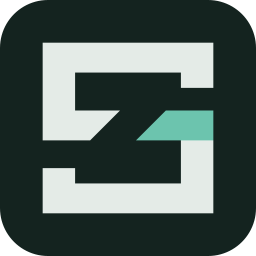
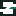
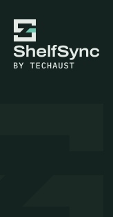
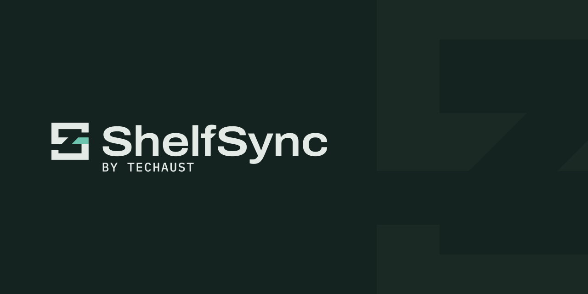

Logos
Four lockups from 05, plus the two installer-sized endorsed lockups this task adds, each in TecHaust's five versions: colour, ink and black on white; dark and white on ink-900. File names follow TecHaust: logo-<lockup>-<version>.svg. Every shape is the approved P3.2 geometry; the build checks that the symbol, wordmark and endorsement outlines are the same as P3.2's.


Tray icons
The bare symbol, pixel-fitted and full bleed, in the colour version for a light taskbar and the dark version for a dark one. A state adds a badge in the bottom-right corner, with a clear gap cut out of the mark. The badge sits wholly below the spine, so the verdigris cut piece is never clipped.
- NormalThe symbol alone.
- PausedTwo bars, the pause sign, in the info colour.
- Needs attentionA round dot in the warning colour.
Bars and a dot are different shapes, so the state never depends on colour. Below, each taskbar shows all three states side by side at device pixels, using the frame Windows picks for this screen's scale. 16 px at 100 %, 20 px at 125 %, 24 px at 150 %, 32 px at 200 %.
| State | 16 px | 20 px | 24 px | 32 px |
|---|---|---|---|---|
| Normaltray-normal-light.ico | ||||
| Pausedtray-paused-light.ico | ||||
| Needs attentiontray-attention-light.ico |
| State | 16 px | 20 px | 24 px | 32 px |
|---|---|---|---|---|
| Normaltray-normal-dark.ico |  | |||
| Pausedtray-paused-dark.ico | ||||
| Needs attentiontray-attention-dark.ico |
Badge sizes (box / gap): 16 px: 6 / 1; 20 px: 7 / 1; 24 px: 9 / 1; 32 px: 11 / 2. Not checked yet: the real Windows 11 notification area, which waits for the tray app at M1.
App icon
shelfsync.ico serves the desktop shortcut, Start, toasts and Setup.exe, which sit on light and dark surfaces alike. The mark's ink vanishes on dark and its mist on light, so the icon is the dark version on an ink-900 plate. Wherever the symbol inside is 64 px or smaller it is pixel-fitted at one of the approved sizes (so the 96 px frame holds the 64 px fit), and never under 16 px except in the 16 px frame (below); in the 128 and 256 px frames it is the smooth vector at two thirds of the plate. Frames: 16, 20, 24, 32, 48, 64, 96, 128, 256 px; up to 48 px they are 32-bit bitmaps, larger ones PNG.

Frames up to 64 px, at 4 device pixels per pixel
The 16 px frame
At 16 px a plate around a 16 px symbol has no room, so this frame alone holds the symbol fitted at 14 px inside a 1 px ink rim (the owner's exception to the 16 px minimum, for this ICO frame only). The rule gives the 14 px fit: strokes 3 and 2, spur 2, openings 2. The rim keeps the icon's edge on white; on dark the S reads as before.
Favicon
favicon.svg is the symbol on a 16-unit pixel grid that switches to the dark colours when the browser is dark (the image follows the system setting, not this page's button, and so do the two live samples' backgrounds). favicon.ico holds the app-icon plate frames at 16, 32, 48 px, for places that don't take SVG.




Installer art
The endorsed lockup needs 266 px for a 12 px "by TecHaust", and NSIS gives 164 px. With the endorsed lockup's own proportions the caption would be 7.1 px there. So two smaller endorsed lockups keep the caption at 12 px: the shapes are unchanged, the endorsement is aligned with the wordmark's left edge as before, and only its size relative to the wordmark grows. Both sit on whole pixels where it matters: the symbol is pixel-fitted at 32 px in the panel and 16 px in the header.
- Stacked: width
- 124 px
- Stacked: caption
- 12 px
- Stacked: endorsement / cap
- 0.52
- Stacked: symbol
- 32 px
- Compact: width
- 118.7 px
- Compact: caption
- 12 px
- Compact: endorsement / cap
- 0.67
- Compact: symbol
- 16 px

Welcome to ShelfSync Setup
Setup will guide you through the installation of ShelfSync.
Click Next to continue.
Choose Install Location
Choose the folder in which to install ShelfSync.
Setup will install ShelfSync in the following folder.
Mock windows, one image pixel per CSS pixel. The window text is NSIS's default wording, shown as sample text only. NSIS takes the 24-bit installer-panel.bmp and installer-header.bmp; the PNGs are previews of the same pixels. How NSIS scales them at 150 % and 200 % is checked at M1; the art is flat colour with a large mark so it survives stretching.


GitHub
The repository's social preview (1280 × 640, shown here at half size) and the README header in both GitHub themes (1280 × 320, drawn at 2× for a 640 px display). The README picks one with <picture> and prefers-color-scheme. The surfaces below stand in for GitHub's own colours with the white and ink-950 tokens.



Tokens
brand/tokens.json is TecHaust's Patina file, copied unchanged (source and date recorded inside it). The build writes tokens.css from it: palette, semantic colours for light and dark, type, space, radius, motion. This page uses nothing else.
- ink-950
- ink-900
- ink-800
- ink-750
- ink-700
- ink-600
- ink-500
- ink-400
- ink-300
- verdigris-900
- verdigris-800
- verdigris-700
- verdigris-500
- verdigris-300
- verdigris-200
- verdigris-100
- stone-50
- stone-100
- stone-200
- stone-300
- stone-500
- mist
- white
- black
- success
- warning
- danger
- info
Checks and files
Every number here comes from the build (brand/generated/measurements.json) and is guarded by the tests. Verdigris is 10.6 % of the mark (9.3 % at 16 px); every spine row at 16 px keeps 3 clear channel pixels.
| Size | Vertical | Horizontal | Spur | Channel run | Channel / stroke | Openings | Whole pixels, cuts 45° "/" |
|---|---|---|---|---|---|---|---|
| 16 px | 3 | 2 (exception) | 2 | 4 | 94.3 % | 3 / 3 | Pass |
| 20 px | 4 | 4 | 2 | 6 | 106.1 % | 2 / 2 | Pass |
| 24 px | 5 | 5 | 2 | 7 | 99.0 % | 2 / 3 | Pass |
| 32 px | 6 | 6 | 3 | 8 | 94.3 % | 4 / 4 | Pass |
| 48 px | 9 | 8 | 4 | 13 | 102.1 % | 7 / 9 | Pass |
| 64 px | 12 | 11 | 6 | 17 | 100.2 % | 9 / 10 | Pass |
| Source | Pair | Foreground | Background | Measured | Doc says | Needs | Result |
|---|---|---|---|---|---|---|---|
| 05 2.2 | Text on page (light) | ink-900 | stone-50 | 15.15 | 15.2 | 7:1 | Pass |
| 05 2.2 | Muted text on page (light) | ink-400 | stone-50 | 7.08 | 7.1 | 7:1 | Pass |
| 05 2.2 | Muted text on alternate section (light) | ink-400 | stone-100 | 6.56 | 6.6 | 4.5:1 | Pass |
| 05 2.2 | Accent text on page (light) | verdigris-700 | stone-50 | 5.90 | 5.9 | 4.5:1 | Pass |
| 05 2.2 | Accent text on alternate section (light) | verdigris-700 | stone-100 | 5.47 | 5.5 | 4.5:1 | Pass |
| 05 2.2 | Button label on primary (light) | white | verdigris-700 | 6.34 | 6.3 | 4.5:1 | Pass |
| 05 2.2 | Button label on primary hover (light) | white | verdigris-800 | 8.64 | 8.6 | 4.5:1 | Pass |
| 05 2.2 | Control border on page (light) | stone-500 | stone-50 | 3.57 | 3.3 | 3:1 | Pass Doc value off |
| 05 2.2 | Control border on card (light) | stone-500 | white | 3.84 | 3.6 | 3:1 | Pass Doc value off |
| 05 2.2 | Focus ring on page (light) | verdigris-700 | stone-50 | 5.90 | 5.9 | 3:1 | Pass |
| 05 2.2 | Decorative verdigris on page (light) | verdigris-500 | stone-50 | 3.85 | 3.9 | 3:1 | Pass |
| 05 2.2 | Success on page (light) | success (light) | stone-50 | 5.47 | 5.2 | 4.5:1 | Pass Doc value off |
| 05 2.2 | Warning on page (light) | warning (light) | stone-50 | 5.33 | 5.3 | 4.5:1 | Pass |
| 05 2.2 | Danger on page (light) | danger (light) | stone-50 | 6.08 | 6.1 | 4.5:1 | Pass |
| 05 2.2 | Info on page (light) | info (light) | stone-50 | 6.71 | 6.7 | 4.5:1 | Pass |
| 05 2.2 | Text on page (dark) | mist | ink-950 | 15.19 | 15.2 | 7:1 | Pass |
| 05 2.2 | Muted text on page (dark) | ink-300 | ink-950 | 8.07 | 8.1 | 7:1 | Pass |
| 05 2.2 | Muted text on alternate section (dark) | ink-300 | ink-750 | 7.65 | 7.7 | 4.5:1 | Pass |
| 05 2.2 | Accent text on page (dark) | verdigris-300 | ink-950 | 8.89 | 8.9 | 4.5:1 | Pass |
| 05 2.2 | Accent text on alternate section (dark) | verdigris-300 | ink-750 | 8.43 | 8.4 | 4.5:1 | Pass |
| 05 2.2 | Button label on primary (dark) | ink-950 | verdigris-300 | 8.89 | 8.9 | 4.5:1 | Pass |
| 05 2.2 | Button label on primary hover (dark) | ink-950 | verdigris-200 | 10.75 | 10.8 | 4.5:1 | Pass |
| 05 2.2 | Control border on page (dark) | ink-500 | ink-950 | 3.92 | 3.9 | 3:1 | Pass |
| 05 2.2 | Control border on card (dark) | ink-500 | ink-800 | 3.53 | 3.5 | 3:1 | Pass |
| 05 2.2 | Control border on dialog (dark) | ink-500 | ink-700 | 3.22 | 3.2 | 3:1 | Pass |
| 05 2.2 | Focus ring on page (dark) | verdigris-300 | ink-950 | 8.89 | 8.9 | 3:1 | Pass |
| 05 2.2 | Decorative verdigris on page (dark) | verdigris-300 | ink-950 | 8.89 | 8.9 | 3:1 | Pass |
| 05 2.2 | Success on page (dark) | success (dark) | ink-950 | 10.79 | 10.8 | 4.5:1 | Pass |
| 05 2.2 | Warning on page (dark) | warning (dark) | ink-950 | 9.72 | 9.7 | 4.5:1 | Pass |
| 05 2.2 | Danger on page (dark) | danger (dark) | ink-950 | 8.06 | 8.1 | 4.5:1 | Pass |
| 05 2.2 | Info on page (dark) | info (dark) | ink-950 | 8.85 | 8.9 | 4.5:1 | Pass |
| 05 2.2 | Mist on the light app bar (ink-900) | mist | ink-900 | 13.44 | 13.4 | 7:1 | Pass |
| 05 2.2 | Mist on the dark app bar (ink-750) | mist | ink-750 | 14.41 | 14.4 | 7:1 | Pass |
| 05 2.2 | Muted ink-300 on the light app bar | ink-300 | ink-900 | 7.14 | 7.1 | 7:1 | Pass |
| 05 2.2 | Muted ink-300 on the dark app bar | ink-300 | ink-750 | 7.65 | 7.7 | 7:1 | Pass |
| 05 2.2 | Focus ring on the light app bar | verdigris-300 | ink-900 | 7.86 | 7.9 | 3:1 | Pass |
| 05 2.2 | Focus ring on the dark app bar | verdigris-300 | ink-750 | 8.43 | 8.4 | 3:1 | Pass |
| 05 2.3 | GPLFamily dot (light) on stone-200 | #4D4D99 | stone-200 | 5.86 | 5.9 | 3:1 | Pass |
| 05 2.3 | GPLFamily dot (dark) on verdigris-900 | #A3A3E6 | verdigris-900 | 4.23 | 4.2 | 3:1 | Pass |
| 05 2.3 | PluginWay dot (light) on stone-200 | #007B80 | stone-200 | 4.01 | 4 | 3:1 | Pass |
| 05 2.3 | PluginWay dot (dark) on verdigris-900 | #3CC8CB | verdigris-900 | 4.89 | 4.9 | 3:1 | Pass |
| 05 2.3 | PluginWay's own teal on stone-200 (why it isn't used) | #009699 | stone-200 | 2.85 | 2.85 | — | Pass |
| 14 2.6 | Ink-900 on white | ink-900 | white | 16.28 | 16.28 | 3:1 | Pass |
| 14 2.6 | Verdigris-700 on white | verdigris-700 | white | 6.34 | 6.34 | 3:1 | Pass |
| 14 2.6 | Ink-900 on stone-50 | ink-900 | stone-50 | 15.15 | 15.15 | 3:1 | Pass |
| 14 2.6 | Verdigris-700 on stone-50 | verdigris-700 | stone-50 | 5.90 | 5.9 | 3:1 | Pass |
| 14 2.6 | Mist on ink-900 | mist | ink-900 | 13.44 | 13.44 | 3:1 | Pass |
| 14 2.6 | Verdigris-300 on ink-900 | verdigris-300 | ink-900 | 7.86 | 7.86 | 3:1 | Pass |
| 14 2.6 | Mist on ink-950 | mist | ink-950 | 15.19 | 15.19 | 3:1 | Pass |
| 14 2.6 | Verdigris-300 on ink-950 | verdigris-300 | ink-950 | 8.89 | 8.89 | 3:1 | Pass |
| 14 2.6 | Verdigris-700 on the light taskbar mock | verdigris-700 | taskbar-light | 5.66 | 5.66 | 3:1 | Pass |
| 14 2.6 | Verdigris-300 on the dark taskbar mock | verdigris-300 | taskbar-dark | 7.87 | 7.87 | 3:1 | Pass |
| 14 2.6 | The halves against each other, light (no minimum: the channel separates them) | verdigris-700 | ink-900 | 2.57 | 2.57 | — | Pass |
| 14 2.6 | The halves against each other, dark (no minimum) | verdigris-300 | mist | 1.71 | 1.71 | — | Pass |
| P3.3 | Ink-900 mark on the light taskbar mock | ink-900 | taskbar-light | 14.54 | — | 3:1 | Pass |
| P3.3 | Mist mark on the dark taskbar mock | mist | taskbar-dark | 13.45 | — | 3:1 | Pass |
| P3.3 | Paused badge, info (light) on the light taskbar mock | info (light) | taskbar-light | 6.44 | — | 3:1 | Pass |
| P3.3 | Paused badge, info (dark) on the dark taskbar mock | info (dark) | taskbar-dark | 7.84 | — | 3:1 | Pass |
| P3.3 | Attention dot, warning (light) on the light taskbar mock | warning (light) | taskbar-light | 5.12 | — | 3:1 | Pass |
| P3.3 | Attention dot, warning (dark) on the dark taskbar mock | warning (dark) | taskbar-dark | 8.61 | — | 3:1 | Pass |
| P3.3 | Mist symbol on the app-icon plate (ink-900) | mist | ink-900 | 13.44 | — | 3:1 | Pass |
| P3.3 | App-icon plate (ink-900) on white (Explorer, light) | ink-900 | white | 16.28 | — | 3:1 | Pass |
| P3.3 | Mist caption on the installer panel (ink-900) | mist | ink-900 | 13.44 | — | 4.5:1 | Pass |
| P3.3 | Ink caption on the installer header (white) | ink-900 | white | 16.28 | — | 4.5:1 | Pass |
| P3.3 | Tone-on-tone watermark (ink-700 on ink-900; decoration, no minimum) | ink-700 | ink-900 | 1.08 | — | — | Pass |
| File | What it holds | Size | Limit |
|---|---|---|---|
| generated/tokens.css | 6.5 KB | — | |
| assets/logo/logo-primary-color.svg (and 4 other versions) | viewBox 0 -14 949.53 143 | 6.5 KB | 11.7 KB |
| assets/logo/logo-symbol-color.svg (and 4 other versions) | viewBox 0 0 100 100 | 521 B | 11.7 KB |
| assets/logo/logo-wordmark-color.svg (and 4 other versions) | viewBox 0 -7 772.89 136 | 6.3 KB | 11.7 KB |
| assets/logo/logo-endorsed-color.svg (and 4 other versions) | viewBox 0 -14 949.53 168.32 | 9.7 KB | 11.7 KB |
| assets/logo/logo-stacked-color.svg (and 4 other versions) | viewBox 0 0 772.89 441.99 | 9.8 KB | 11.7 KB |
| assets/logo/logo-compact-color.svg (and 4 other versions) | viewBox 0 -14 949.53 233.44 | 9.8 KB | 11.7 KB |
| assets/app/shelfsync.ico | 16, 20, 24, 32, 48, 64 png, 96 png, 128 png, 256 png | 24.5 KB | 39.1 KB |
| assets/favicon/favicon.ico | 16, 32, 48 | 14.7 KB | 19.5 KB |
| assets/favicon/favicon.svg | viewBox 0 0 16 16 | 459 B | 1.5 KB |
| assets/tray/tray-normal-light.ico | 16, 20, 24, 32 | 9.4 KB | 11.7 KB |
| assets/tray/tray-paused-light.ico | 16, 20, 24, 32 | 9.4 KB | 11.7 KB |
| assets/tray/tray-attention-light.ico | 16, 20, 24, 32 | 9.4 KB | 11.7 KB |
| assets/tray/tray-normal-dark.ico | 16, 20, 24, 32 | 9.4 KB | 11.7 KB |
| assets/tray/tray-paused-dark.ico | 16, 20, 24, 32 | 9.4 KB | 11.7 KB |
| assets/tray/tray-attention-dark.ico | 16, 20, 24, 32 | 9.4 KB | 11.7 KB |
| assets/installer/installer-panel.bmp | 164 × 314, 24-bit | 150.9 KB | 156.3 KB |
| assets/installer/installer-panel.png | 164 × 314 | 5.3 KB | 19.5 KB |
| assets/installer/installer-header.bmp | 150 × 57, 24-bit | 25.2 KB | 156.3 KB |
| assets/installer/installer-header.png | 150 × 57 | 3.8 KB | 19.5 KB |
| assets/github/social-preview.png | 1280 × 640 | 19.3 KB | 58.6 KB |
| assets/github/readme-header-light.png | 1280 × 320, alpha | 15.8 KB | 39.1 KB |
| assets/github/readme-header-dark.png | 1280 × 320, alpha | 15.8 KB | 39.1 KB |
| generated/measurements.json | 20.3 KB | — |